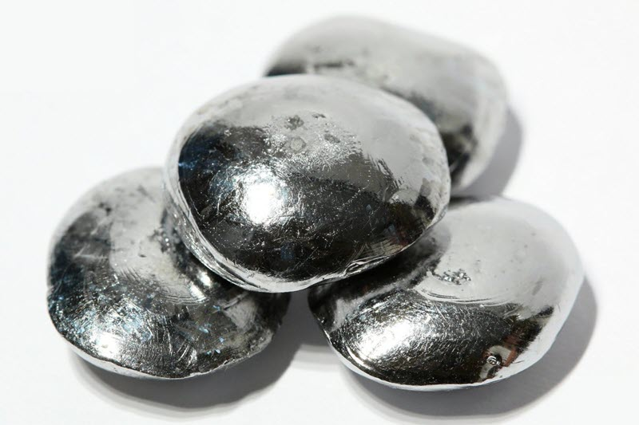

Рений
Ре́ний (химический символ — Re, от лат. Rhenium) — химический элемент 7-й группы (по устаревшей классификации — побочной подгруппы седьмой группы, VIIB) шестого периода периодической системы химических элементов Д. И. Менделеева, с атомным номером 75.При стандартных условиях простое вещество рений представляет собой тяжёлый металл серебристо-белого цвета. Самый тугоплавкий металл после вольфрама.
В 1871 г. Д. И. Менделеев предсказал существование элемента с атомным весом 190 – аналога марганца. В 1925 г. немецкие химики В. Ноддак, И. Такке-Ноддак и О. Берг обнаружили элемент спектральным методом в платиновых рудах и минерале колумбите.

Рений – типичный рассеянный элемент. Его содержание в земной коре 7·10–8 % по массе. Собственные минералы рения очень редки; известны два минерала – джезказганит (Сu,Pb,Re)S2 и рениит ReS2. Повышенное содержание рения отмечено в молибденитовых концентратах и медных сульфидных рудах, горючих сланцах, битумах, углях, продуктах вулканической деятельности. Мировые запасы рения около 2 295 т, мировое производство 59 т (2021).
Рений получают при переработке сырья с очень низким содержанием целевого компонента (в основном это медное и молибденовое сульфидное сырьё).Переработка сульфидного ренийсодержащего медного и молибденового сырья основана на пирометаллургических процессах (плавка, конвертирование, окислительный обжиг). В условиях высоких температур рений возгоняется в виде высшего оксида Re2O7, который затем задерживается в системах пылегазоулавливания.Более 80 % рения используется в виде покрытий и жаропрочных сплавов на основе W–Mo, а также Ni, Cr, Mo, Ti в аэрокосмической технике (турбины для реактивных и турбореактивных двигателей, сопла ракетных двигателей с дополнительным покрытием из иридия и др.). Рений входит в состав платинорениевых катализаторов, используемых в нефтеперерабатывающей промышленности (получение высокооктанового бензина), рениевых катализаторов метатезиса олефинов. Рений – материал нитей накаливания ламп, долгоживущих рентгеновских трубок, герконов, подогревателей, катодов и газопоглотителей электровакуумных приборов, термопар (Pt-Re, Mo-Re, W-Re), термоионных и термоэлектронных эмиттеров ионов в масс-спектрометрах, стрелок и осей точных приборов (компасов, торсионов, гироскопов) и др., а также перспективный конструкционный материал для деталей атомных реакторов и оболочек твэлов, работающих при температуре от 1650 до 3000 °С, ювелирных изделий.